{
_id: ObjectId("509a8fb2f3f4948bd2f983a0"),
name: "Jon Snow",
age: 24,
died: true,
politicalInfo: {
house: "Targaryen",
affiliations: ["House Stark", "Night's Watch"]
},
parents: [
{
id: "65db3d35964a1e955390b81e",
name: "Lyanna Stark",
age: 16
},
{
id: "75db3d3fa70e10a0b73f4d30",
name: "Rhaegar Targaryen",
age: 97
}
]
}MongoDB - NoSQL Optimizations
Hello world!
🫵 🎤 ❓
Qui je suis
🥽🧪 Experience Lab
☁️🎮 Streaming Team

🚘 🛋️ 👗 Cloud automation
👨🏻💻
Backend
Kotlin
Clean Archi, TDD, DDD
🎤 conférences
Votre (vos) langages préféré(s)

Vos connaissances en BDD ❓
Jour 1
Introduction à MongoDB
NoSQL ?
Not Only SQL
Categorie de
!= RDBMS
Relationnel
Données structurées, prédéfinies
Nombreuses contraintes
Relations complexes
Transactions fortes
NoSQL
Modélisation différente
Larges volumes de données
Données non/semi-structurées
Schémas flexibles
Mise à l’échelle horizontale
Catégories
Clé-valeur (Redis, AWS DynamoDB)
Documents (MongoDB, CouchDB)
Graphes (Neo4J)
Colonnes (Cassandra, GCP BigQuery, AWS Redshift)
ACID / BASE
ACID
- Atomicity
The database transaction must completely succeed or completely fail. Partial success is not allowed.
- Consistency
During the database transaction, the DB progresses from one valid state to another. The state is never invalid.
- Isolation
The client’s database transaction must occur in isolation from other clients attempting to transact with the DB.
- Durability
Once a transaction is committed, its changes are permanently stored in the database, even in the event of a system failure or crash. This ensures that committed transactions persist and are not lost.
BASE
- Basically Available
The system remains operational and responsive despite failures or partitions in the network.The system as a whole remains available to serve requests.
- Soft State
Data can be inconsistent. The system may temporarily exist in an inconsistent state, but it will eventually converge to a consistent state.
- Eventual consistency
Given enough time and absence of further updates, all replicas of the data will eventually converge to a consistent state.
Modèle R/W
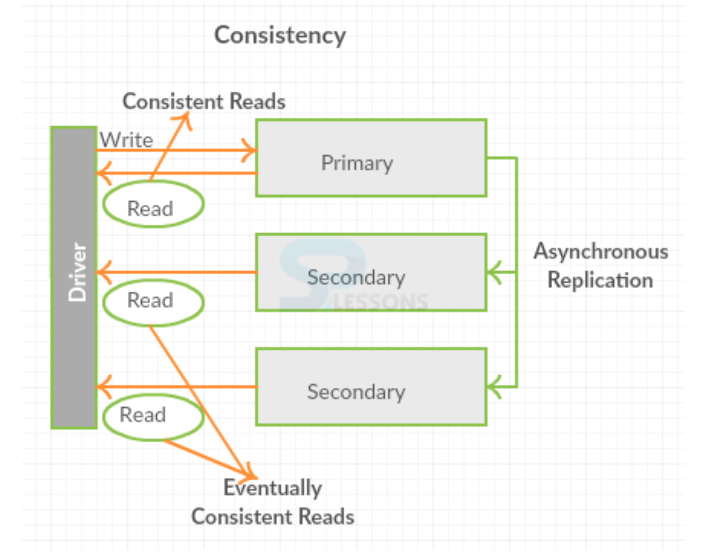
MongoDB
Catégorie: documents
ACID en lecture/écriture au document
Optionnel BASE en lecture du document
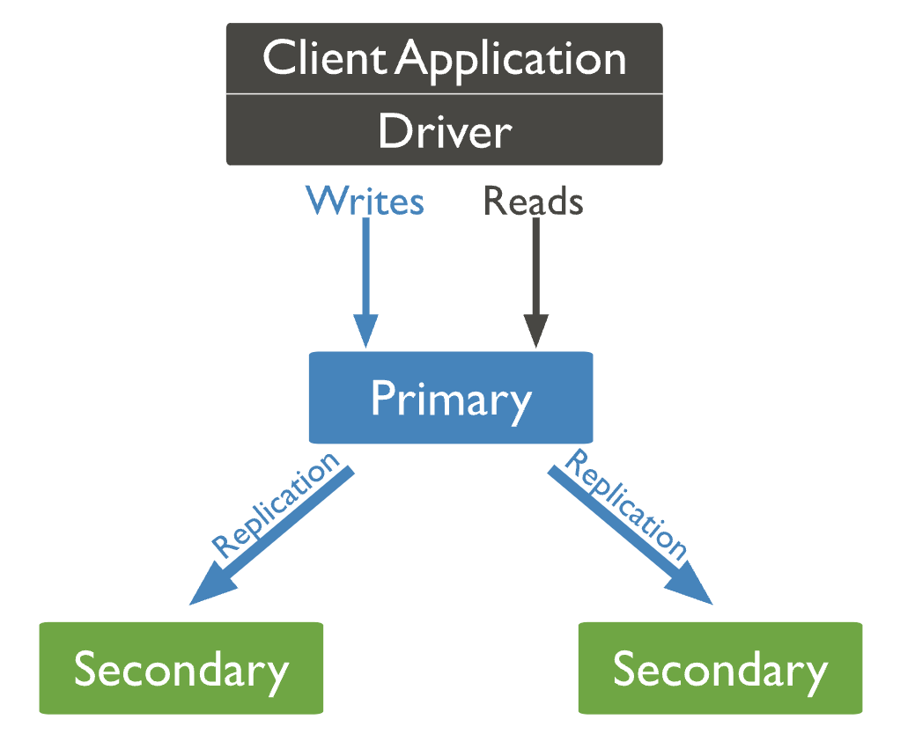 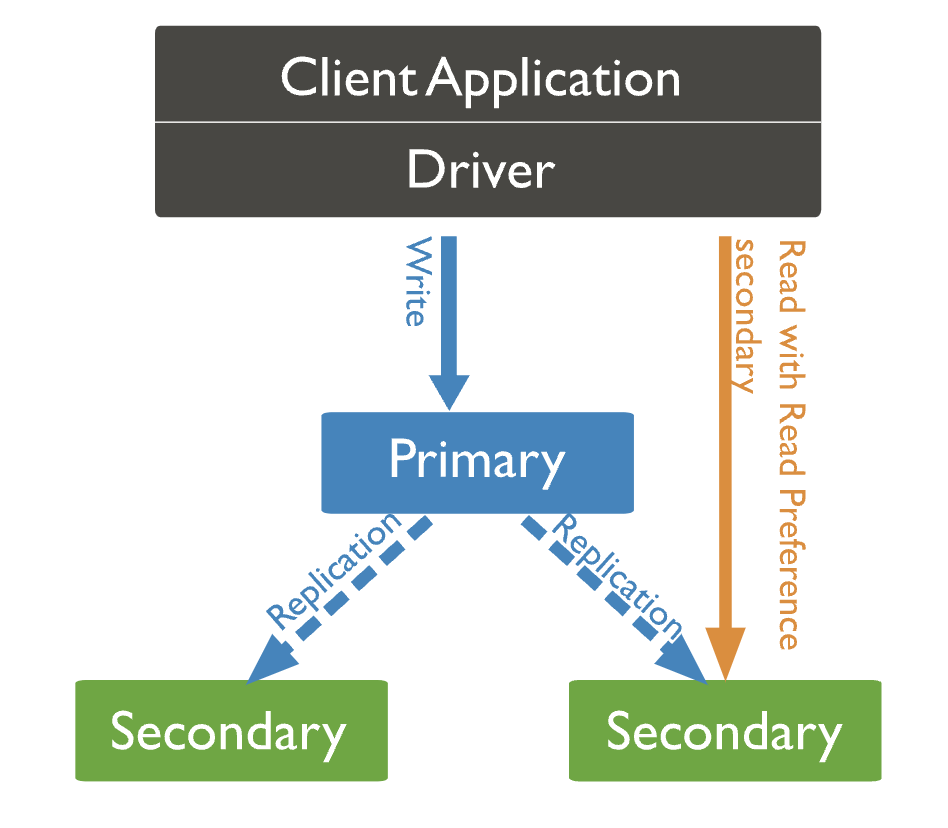
MongoDB
Schemaless
Documents hétérogènes
JSON (BSON ⚙️)
| Relationnel | Document |
|---|---|
database | database |
table | collection |
row | document |
column | field |
PK (primary key) | primary index ( |
| Relationnel | Document |
|---|---|
FK (foreign key) | N/A |
JOIN | N/A (~) |
Requêtes
RDBMS → SQL
MongoDB → Syntaxe JavaScript, queries JSON
Document
CRUD
Create

insertMany([…], {options})
CRUD
Update
updateOne({filter}, {update query})
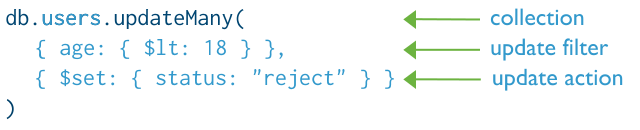
CRUD
Delete
deleteOne({filter})

Les opérateurs de requête
Opérateurs de comparaison
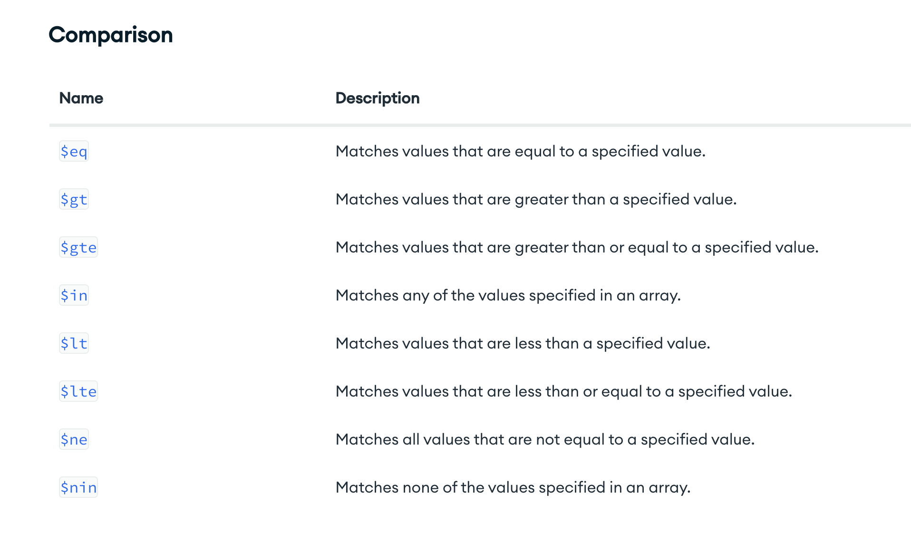
Opérateurs logiques
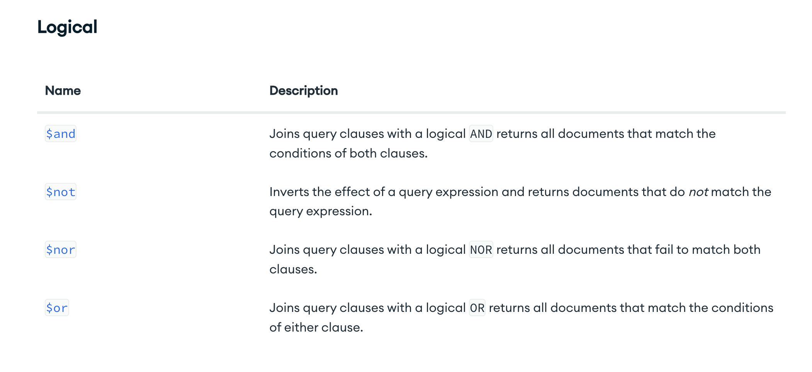
Opérateurs de champs
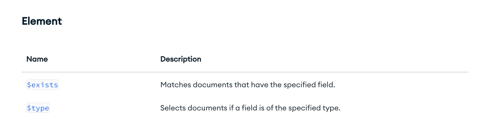
Opérateurs de tableaux
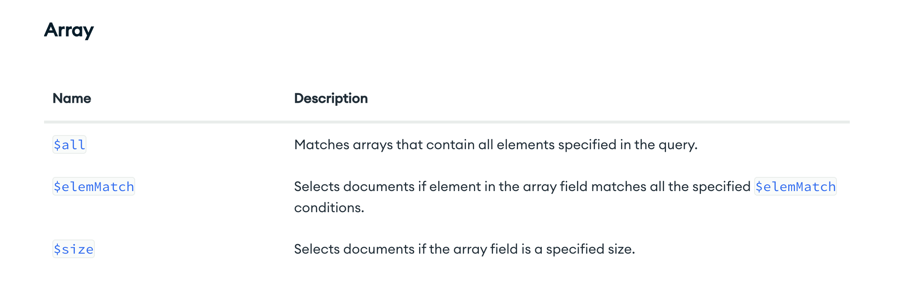
Programmation Objet (POO)
public record GoTCharacter(UUID id, String name, int age, List<GoTCharacter> parents) {}Outils, binaires
CLI : mongosh
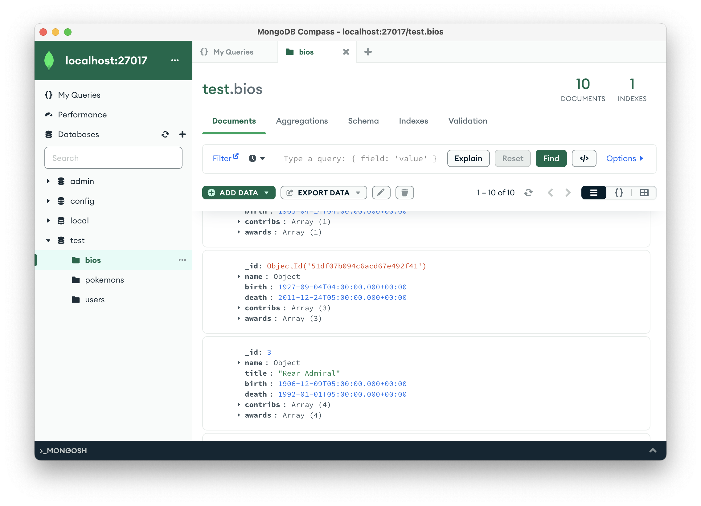
TD 1
Jour 2
Indexation
Qu’est-ce qu’un index ? 👈
📘 → 👉📖
Optimisation
⬇⏱️ exécution des requêtes
Indexation
Contrepartie ?
Coût ⏱️ à l’écriture
Coût en espace (RAM/Disque)
Indexation
| Utilisation réfléchie |
Index MongoDB ?
db.pokemons.getIndexes()[
{ v: 2, key: { _id: 1 }, name: '_id_' },
{ v: 2, key: { age: -1 }, name: 'age_-1' }
]L’index _id est obligatoire
Créer un index
db.<collection>.createIndex(
{ (field): (value) },
{ name: "<indexName>" }
)Supprimer un index
db.<collection>.dropIndex("<indexName>")
db.<collection>.dropIndexes([ "<index1>", "<index2>" ])Exemple
Indexes simples (simple field)
db.collection.createIndex( { age: -1 } )
db.collection.createIndex( { nickname: 1 } )Exemple
Indexes composés

db.collection.createIndex( { userId: 1, score: -1 } ) 👈Ordre des champs !
db.students.createIndex( { name: 1, gpa: -1 } ) 👈db.students.find( { name: "Alice", gpa: 3.6 } ) ✅
db.students.find( { name: "Bob" } ) ✅db.students.find( { gpa: { $gt: 3.5 } } ) ❌Ordre des tris !
db.leaderboard.createIndex( { score: -1, username: 1 } ) 👈db.leaderboard.find().sort( { score: -1, username: 1 } ) ✅
db.leaderboard.find().sort( { score: 1, username: -1 } ) ✅db.leaderboard.find().sort( { username: -1, score: 1 } ) ❌
db.leaderboard.find().sort( { score: 1, username: 1 } ) ❌
db.leaderboard.find().sort( { score: -1, username: -1 } ) ❌Indexes multi-clés
db.students.insertMany( [
{
"name": "Andre Robinson",
"test_scores": [ 88, 97 ]
},
{
"name": "Wei Zhang",
"test_scores": [ 62, 73 ]
},
{
"name": "Jacob Meyer",
"test_scores": [ 92, 89 ]
}
] )db.students.createIndex( { test_scores: 1 } ) 👈db.students.find({ test_scores: { $elemMatch: { $gt: 90 } } })Attribut imbriqué
[
{
"item": "t-shirt",
"stock": [
{
"size": "small",
"quantity": 8
},
{
"size": "large",
"quantity": 10
},
]
},
{
"item": "sweater",
"stock": [
{
"size": "small",
"quantity": 4
},
{
"size": "large",
"quantity": 7
},
]
}
]db.inventory.createIndex( { "stock.quantity": 1 } ) 👈[ 4, 7, 8, 10 ]
Indexes texte
[
{
_id: 1,
content: "This morning I had a cup of coffee.",
about: "beverage",
keywords: [ "coffee" ]
},
{
_id: 2,
content: "My favorite flavors are strawberry and coffee",
about: "ice cream",
keywords: [ "food", "dessert" ]
}
]db.blog.createIndex( { "content": "text" } ) 👈db.blog.find(
{
$text: { $search: "coffee" }
}
)Wildcard indexes
| À éviter, sauf quand : |
Requêtes sur documents trop hétérogènes
Requêtes sur un champ hétérogène
Si les documents sont globalement uniformes, privilégier les indexes composés
Wildcard indexes
[
{
"product_name" : "Spy Coat",
"attributes" : {
"material" : [ "Tweed", "Wool", "Leather" ],
"size" : {
"length" : 72
}
}
},
{
"product_name" : "Spy Pen",
"attributes" : {
"secret_feature" : {
"name" : "laser",
"power" : "1000",
"units" : "watts",
}
}
}
]db.products.createIndex( { "attributes.$**" : 1 } ) 👈Indexes géospatiaux
Indexes
2d🔶Indexes
2dsphere🌐
🌐
db.map.insert({
"_id": "Westfield London",
"location": [ -0.22157, 51.507176 ]
});
db.map.insert({
"_id": "Green Lanes Shopping Centre",
"location": [ -0.098092, 51.576198 ]
});db.map.createIndex({"location": "2dsphere"}); 👈
db.map.find({
"location": {
"$nearSphere": { // même chose que $near
"$geometry": {
"type": "Point",
"coordinates": [-0.127748, 51.507333]
}
}
}
});🔶
db.map.createIndex({"location": "2d"}); 👈
db.map.find({"location":{"$nearSphere":[ -0.127748, 51.507333 ]}});
[ /* $nearSphere */
{"_id" : "Westfield London"},
{"_id" : "Green Lanes Shopping Centre"}
]
db.map.find({"location":{"$near":[ -0.127748, 51.507333 ]}});
[ /* $near */
{"_id" : "Green Lanes Shopping Centre"},
{"_id" : "Westfield London"}
]Operations 🔶 & 🌐
$geoIntersects$geoWithin$near$nearSphere
Sur des GeoJSON objects : Point, LineString, Polygon…
Indexes hash
| Lié au sharding |
Calculer automatiquement le hash d’un champ

Propriété additionnelles
Index unique
Index insensible à la casse
Index "caché"
Index partiel (conditionnel)
Index épars (🫥
null)Index
TTL(Time to live)
Index unique
db.members.createIndex( { "user_id": 1 }, { unique: true } ) 👈db.members.createIndex(
{
groupNumber: 1,
lastname: 1,
firstname: 1
},
{ unique: true }
) 👈Case-insensitive
db.fruit.insertMany( [
{ type: "apple" },
{ type: "Apple" },
{ type: "APPLE" }
] )db.fruit.createIndex(
{ type: 1 },
{ collation: { locale: 'en', strength: 2 } }
) 👈db.fruit.find( { type: "apple" } )
// un seul résultat, n'utilise pas l'index
db.fruit.find( { type: "apple" } )
.collation( { locale: 'en', strength: 2 } )
// utilise l'index, 2 résultatsLa règle des indexes
E.S.R.
Equality
Sort
Range
Exemple
db.cars.find({
cost: { $gt: 15000 },
manufacturer: 'Ford'
}).sort( { model: 1 } ){ cost: 1, model: 1, manufacturer: 1 } (1)
{ manufacturer: 1, model: -1, cost: 1 } (2)
{ cost: 1, manufacturer: 1, model: 1 } (3)
{ manufacturer: 1, model: 1, cost: 1 } (4)
{ manufacturer: 1, cost: -1, model: 1 } (5)
{ model: 1, manufacturer: 1, model: 1 } (6)Operators, règle ESR
| Equality | Sort | Range |
|---|---|---|
|
|
|
Stratégie des indexes
Index adapté à chaque requête
Une requête qui utilise seulement un index pour trouver les résultats est otpimale
Requête discriminante
_idest très discriminantles operateurs
$ne,$nin,$regexne sont jamais discriminants
Requête couvrante
Tous les champs de la requêtes sont dans un index
Tous les champs retournés par la requête sont dans le même index
Aucun des champs de la requête n’est
null({field: null})
db.inventory.createIndex( { type: 1, item: 1 } ) 👈db.inventory.find(
{ type: "food", item:/^c/ },
{ item: 1, _id: 0 }
)Les indexes vivent en RAM
Les documents parfois en RAM, surtout sur le disque
> db.collection.totalIndexSize()
4617080000 (4,6 Gb)> db.collection.stats().indexSizes
{
_id_: 889383,
score_1: 123203,
name_1: 332322
}Analyse des indexes
explain
db.students
.explain() // same as .explain("queryPlanner")
.find({score: {$gt: 10}})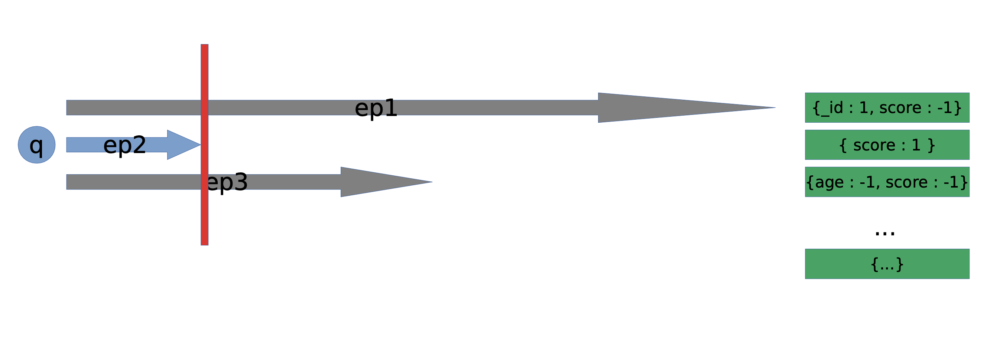
Analyse des indexes
explain("executionStats")
db.students
.explain("executionStats")
.find({score: {$gt: 10}})Statistiques sur l’exécution du plan gagnant:
clés d’index parcourues
documents parcourus,
sens de parcours
temps d’exécution
Analyse des indexes
explain("executionStats")
db.students
.explain("allPlansExecution")
.find({score: {$gt: 10}})Statistiques sur l’exécution du plan gagnant et des perdants
Analyse des indexes
hint
db.students
.explain("executionStats")
.find({score: {$gt: 10}})
.hint("age_-1_score_1")Forcer une requête à utiliser un index plutôt qu’un autre
TD 2
Jour 3
Modélisation
| Relationnel | Document |
|---|---|
On modélise les tables en fonction des relations et cardinalités entre entités | On modélise les collections en fonction de la façon dont on va requêter la base |
Critères de décision
Identifier les données
Créer une "table de charge"
| Action | Requête (R/W) | Informations | Fréquence | Priorité |
|---|---|---|---|---|
Contexte | Lecture/Écriture | Données concernées | N/jour, /mois, /h | Criticité |
Choix
Encapsulation vs. Référence
Embedded vs. Reference
Encapsulation
Dénormalisation
db.movies.findOne()
{
_id: ObjectID("ZEDS"),
name: "Titanic",
director: { // Sous-document, pas de
name: "James Cameron" // collection dédiée
}, // Relation 1-1
actors: [
{ // Sous-document, pas de
name: "Leonardo", // collection dédiée
age: 35 // Relation 1-N
}, //
{
name: "Kate",
age: 28
}
]
}Encapsulation
Cas d’usages
Relations de type
contient,1-11-Nrelations, où les N sont vus comme des fils du parent, N == modéré
Avantages
Performance en lecture
Récupérer les relations en une requête
Maj. les relations en une requête
Encapsulation
| Taille limite document 16Mo |
Si les données contenues changent souvent, ou sont de type "catalogue" → Références
| On tolère de dupliquer la donnée → ⬆️ synchronisations |
Références
Normalisation
db.parts.findOne()
{
_id: ObjectID("AAC"),
name: "Power supply",
price: 25,45,
qty: 443,
..
}db.catalog.findOne()
{
name: "Microwave",
parts: [ ObjectID("AAC"), ObjectID("CSR")... ],
code: "SADX_OPS",
...
}Références
Cas d’usages
l’encapsulation et la duplication !→ amélioration de performance en lecture / données changent trop souvent (impact de maj. trop couteux)
N-Nrelations, ou arboréscentesLes encapsulés doivent également être requêtés fréquemment de manière isolée
Cas particulier "inversé"
Relations 1-N, N == ⛰️
db.hosts.findOne()
{
_id : ObjectID('CCCB'),
name : 'goofy.example.com',
ipaddr : '127.66.66.66'
}db.logs.findOne() // logs.countDocs() == ⛰️
{
time : ISODate("2024-03-11T09:42:41.382Z"),
message : 'cpu is on fire!',
host: ObjectID('CCCB') // Référence inversée vers host
}Règles MongoDB
Privilégier l’encapsulation (dénormalisation) le plus possible
La duplication de l’information est encouragée si elle mène à des performances ⬆️ en lecture
N’utiliser le référencement (normalisation) que si nécessaire
Mémo modélisation
Privilégier l’encapsulation
Accès isolé à une entité → pas d’encapsulation
Les tableaux
size > 200→ pas d’encapsulationNe pas avoir peur des jointures applicatives(indexées)
📈 R/W ratio → encapsulation
Modéliser avec les accès aux données en tête
Ex : AmaDiscount
On veut gérer un système de commandes d’articles
classDiagram
Customer "1" o-- "0..*" Order
Customer "1" o-- "1..*" Address : canBeShippedAt
Order "1" o-- "1..*" Item : contains
Order --> "1" Address: shipsTo
class Customer{
id: UUID
}
class Order{
date: Date
totalPrice: Double
}
class Item{
price: Double
quantity: Int
}
class Address{
name: String
}
Ex : Movinder
Nombreuses notes (1M users) + statistiques
On veut savoir dans quels films a joué un acteur
classDiagram
Movie "1" o-- "0..*" Rating
Movie "1..*" o-- "1..*" Actor
Movie "1..*" --> "1" Country
class Movie{
id: UUID
name: String
}
class Country {
name: String
}
class Rating{
userId: UUID
swipe: Left/Right
}
class Actor{
id: UUID
name: String
}
Ex : École, notes & examens
classDiagram
Student "0..*" -- "0..*" Test
class Student{
id: UUID
name: String
}
class Test {
name: String
year: Int
}
Pipelines d’Agrégation
Grouper les valeurs de plusieurs documents
Effectuer des opérations sur ces valeurs
Faire des statistiques/BI
Pipelines
Constituées d’un ou plusieurs
stagesFiltres
Regroupements
Éclatements
Calculs (total, moyenne, min, max…)
Projections
Les documents en sortie de chaque
stagesont passés au suivant
Stages 1/3
Filtres et tris
$match(filtrer)$sort(trier)
Stages 2/3
Modification et structure
$group(grouper, requiert une clé_id)$project(projection de certains champs)$unwind(développer un tableau en n fois le même document)$addFields(rajouter, générer des nouveaux champs)
Stages 3/3
Restrictions de résultats
$limit(uniquement n premiers documents)$skip(ignorer les n premiers)
Stages : Documentation
Stages : représentation
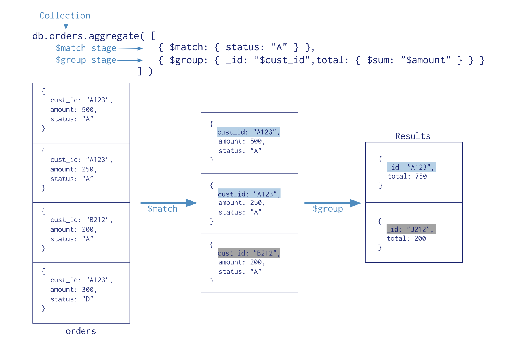
Exemple
db.campings.aggregate([
{ $group: { _id: "$city", total: { sum: 1 } } },
{ $sort : { total: -1 } },
{ $limit: 5 },
{ $project: { _id: 0, city: "$_id", total: 1 } }
])
[
{ "city": "ARGLÈS-SUR-MER", total: 29 },
{ "city": "AGDE", total: 23 },
{ "city": "VIAS", total: 20 },
{ "city": "SAINT-JEAN-DE-MONTS", total: 20 },
{ "city": "LES MATHES", total: 17 },
]$unwind
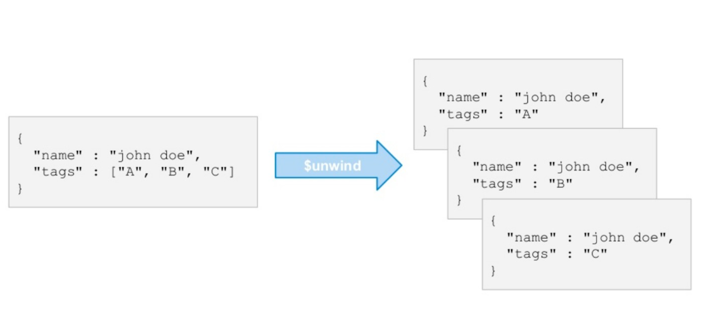